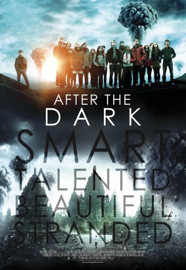

gesehen am 08.08.2017
gesehen am 08.08.2017Alternativ: After the Dark gesehen am 08.08.2017
 
 IMDB-Wertung: 5.7 / 10
IMDB-Wertung: 5.7 / 10  Metascore:
Metascore: 
When the last day of school comes for a group of students in a philosophy class, their instructor, Mr. Zimit, challenges them to different sorts of exercises that take place in a post-nuclear apocalyptic world. While there, they each get chosen professions and have to decide whether who is valuable or not because the bunker they will be staying in for a year has only enough oxygen for 10 people. Mr. Zimit challenges them in different rounds to see how they could survive. Issues arise when they notice Mr. Zimit is disruptive to the game.
Jahr: 2013
Dauer: 106 Minuten
FSK: 12
Land: USA Studio: Phase 4 FilmsTonspuren:
Untertitel: Deutsch,
Auflösung: 720p (1280x536) Größe: 2498 MB
Regisseur: John Huddles
Drehbuch: Louis Cha
Soundtrack:
Darsteller:
 James D'Arcy als Mr. Zimit
James D'Arcy als Mr. Zimit Daryl Sabara als Chips
Daryl Sabara als Chips Freddie Stroma als Jack
Freddie Stroma als Jack Rhys Wakefield als James
Rhys Wakefield als James Bonnie Wright als Georgina
Bonnie Wright als Georgina Erin Moriarty als Vivian
Erin Moriarty als Vivian Abhi Sinha als Kavi
Abhi Sinha als KaviDatei: X:\2013(N-Z)\Philosophers - Wer überlebt, The (2013, FSK12, 1280x536).mkv seit 07.08.2017
Festplatte: HD 2013(I-Z)-2014(A-Z)
 Es gibt insgesamt 133 Filme in der Gruppe '2013(N-Z)'
Es gibt insgesamt 133 Filme in der Gruppe '2013(N-Z)'